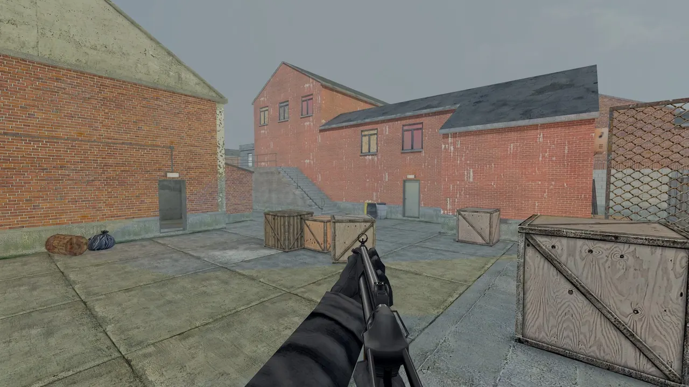
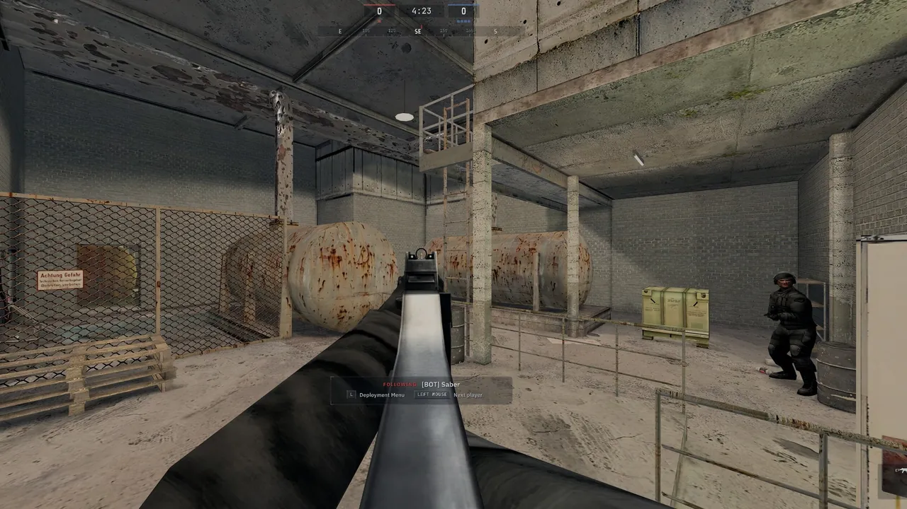

DirectX 12-renderer
Elk frame wordt met DirectX 12 in het eigen venster van het spel weergegeven. Randvereffening, omgevingsschaduwen, HDR, bloom en verscherping zijn optioneel. Oudere pc's vallen automatisch terug op OpenGL.


De klassieke tactische shooter, opnieuw gebouwd als native 64-bit game met een DirectX 12-renderer. De originele maps, soldaten en HUD, en een launcher die je servers host en het spel up-to-date houdt.

Een live minimap, treffers die je voelt, friendly fire, en een spel dat van de taakbalk tot het eerste beeld als Platinum oogt. Dit is wat er in 0.37.2 veranderd is, en waarom.
TrueCombat: Elite was een realistische total conversion voor Enemy Territory in een moderne setting: één leven per ronde, echte wapens en maps gemaakt voor rustig, voorzichtig spel. Het draait nog steeds als 32-bit mod op een engine uit 2003.
TrueCombat: Platinum bouwt het opnieuw als native 64-bit Windows-spel. De renderer is nieuwe DirectX 12-code, de HUD is pixel voor pixel vergeleken met het origineel, en de bewegingssnelheden komen rechtstreeks uit de originele waarden. Werkt DirectX 12 niet goed, dan draait Safe start het op OpenGL.

Elk frame wordt met DirectX 12 in het eigen venster van het spel weergegeven. Randvereffening, omgevingsschaduwen, HDR, bloom en verscherping zijn optioneel. Oudere pc's vallen automatisch terug op OpenGL.
Indeling, lettertypen, kompas, staminabalk, rondeklok en doelregels uit TC:E. Het lichaamssilhouet kleurt geel, oranje en rood als je geraakt wordt.
Sprint met Shift tot je stamina op is, leun om hoeken met Q en E, hurk met C en ga liggen met X. Ladders en water werken zoals in TC:E, en elke snelheid komt overeen met het origineel.
Elk schot raakt een zone met eigen schade. Gehurkte en liggende spelers zijn een kleiner doelwit.
Alle 27 wapens, het mes en elke granaat, met de originele schade, terugslag en spreiding. Kogels gaan door deuren, muren en kratten en verliezen bij elk oppervlak kracht.
De launcher zoekt op GitHub naar nieuwe versies, toont downloadsnelheid en resterende tijd, en installeert alleen updates die door Team Terminus zijn ondertekend. Je instellingen en servers blijven bewaard.




Eén leven per ronde, echte wapens en maps gemaakt voor geduldig, tactisch spel. De video begint bij 0:32.
De video speelt af via YouTube in de privacyvriendelijke modus. Er wordt niets van YouTube geladen tot je op afspelen drukt.
Elke afbeelding komt rechtstreeks uit de DirectX 12-renderer. Niets bijgewerkt.


Sleep over de afbeelding om de originele look met de nieuwe presets te vergelijken. Zelfde plek, zelfde frame: het westelijke emplacement van Railhouse op 1440p.
HD-textures voor de wereld, modellen, HUD en menu's zijn standaard geïnstalleerd. Op RTX-kaarten zijn ook de DLSS-kwaliteitsstanden beschikbaar: typ r_dx12Dlss 2 tot en met 5 in de console en daarna vid_restart.

 Low
Ultra
Low
Ultra

Twee officiële EU-servers draaien dag en nacht: #1 Ranked, waar elke wedstrijd meetelt voor de ranglijsten, en #2 Unranked, waar bots het altijd druk houden. Elke server die gehost wordt met List publicly aan, verschijnt hier en in het tabblad Servers van de launcher.
Je kunt altijd vanuit de launcher hosten en je adres delen. Anderen verbinden standaard via UDP-poort 27971. Iedereen in een potje heeft dezelfde versie nodig.
| Server | Map | Spelers | Modus |
|---|
De live serverlijst wordt geladen. Het tabblad Servers in de launcher toont dezelfde lijst.

Klaarmelden, een messenronde om kanten, rust en tactische time-outs die de hele wedstrijd bevriezen. Eén commando op elke server.
Wedstrijdmodus
De realistische tactische shooter op basis van Enemy Territory, vandaag speelbaar op Windows 10 en 11.
TC:E vandaagElke update staat op de nieuwspagina, met een RSS-feed. Downloads staan op GitHub Releases. De patchnotes zelf zijn in het Engels.
Lees de beginnersgids voor de besturing, de spelmodi en een paar tips waarmee je langer overleeft. Op de wapenpagina staat elk wapen uit TC:E.
Ja. Download het van GitHub Releases en speel. Elke release bevat de broncode en de licenties voor de originele spelbestanden.
Download de perskit met logo's, screenshots en een factsheet.
Ja. Kies een officiële EU-server in het tabblad Servers van de launcher, ranked of unranked, join een andere publieke server of host in een paar klikken je eigen potje.
Ja, en meer. Elk wapen, alle zeven spelmodi, de originele bewegingssnelheid, leunen, ladders, zwemmen, klimmen op randen en het sluipschuttersvizier zitten erin, aangevuld met nieuwe onderdelen zoals de live minimap en een competitieve wedstrijdmodus. De roadmap laat zien wat daarna volgt.
Word lid van de TrueCombat: Platinum Discord. Daar worden potjes georganiseerd, servers gedeeld en nieuwe versies als eerste aangekondigd.
Druk op Safe start in de launcher. Dan draait het spel op OpenGL in een venster van 1280 × 720, en het spel valt ook zelf terug op OpenGL als DirectX 12 faalt.